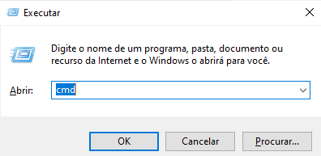

O Windows acumula vários arquivos temporários que, com o tempo, passam a não ter mais utilidade, e acabam ocupando espaço no armazenamento de seu computador.
Pode parecer algo realmente complicado de se fazer, mas, na realidade, limpar os arquivos temporários de seu computador é bem mais simples do que você imagina!
Para fazer isso, basta seguir estes passos:
1 - Feche todos os programas.
2 - Pressione WINDOWS + R no teclado para abrir a janela Executar.

3 - Digite %temp% e clique em OK.
4 - Exclua o conteúdo da pasta que é exibida.

Dica: Alguns arquivos podem estar sendo usados em processos de segundo plano e, por isso, talvez nem todos sejam excluídos. A reinicialização poderá permitir esse processo de exclusão total.